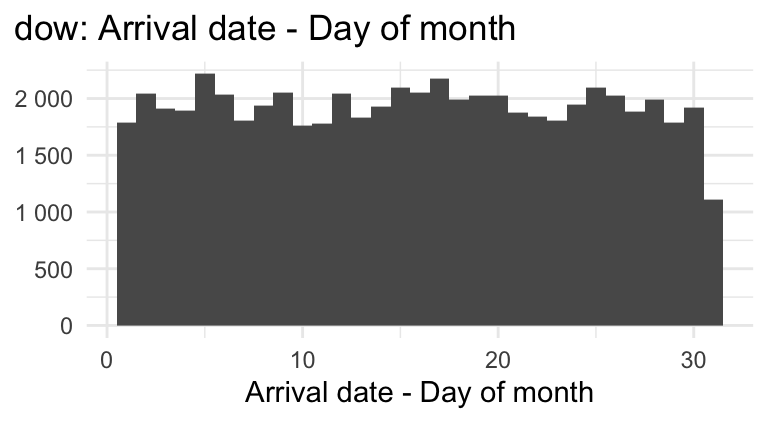
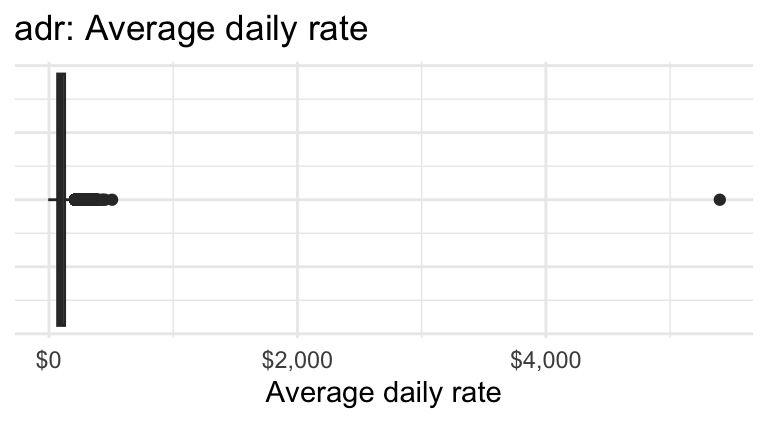
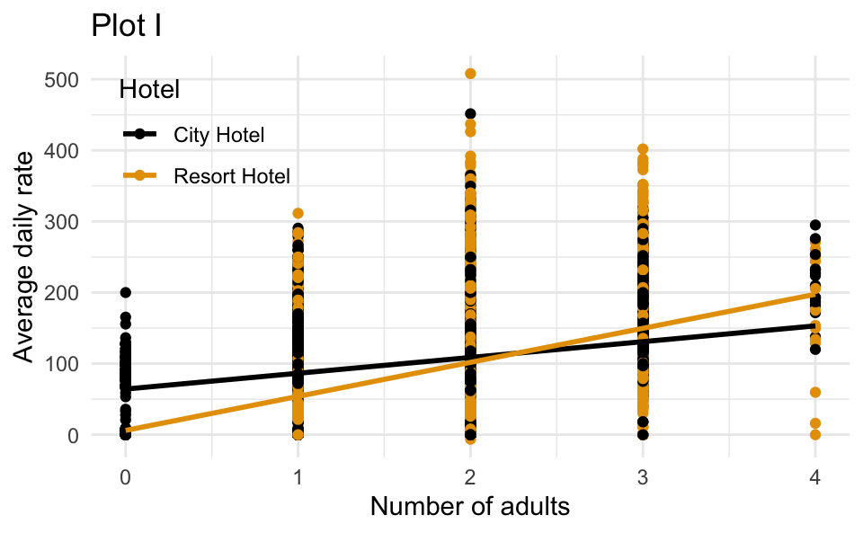
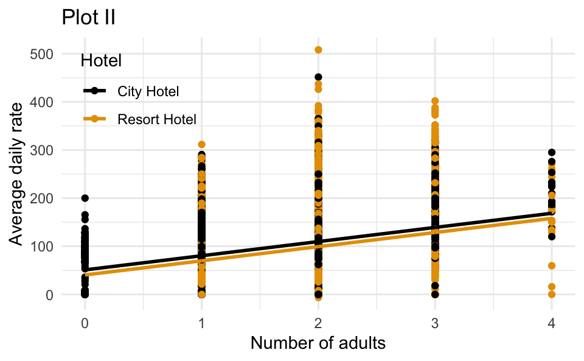

hotels <- read_csv("data/hotels.csv")Lab 5
Due: end-of-lab Friday October 2
Our data today describe the demand of two different types of hotels. Each observation represents a hotel booking between July 1, 2015 and August 31, 2017. Some bookings were cancelled and others were kept (ie. the guest checked in).
The variables in the dataset and their descriptions are as follows:
-
hotel: Hotel type (Resort Hotel or City Hotel); -
is_canceled: Value indicating if the booking was"canceled"(1) or"not canceled"(0); -
lead_time: Number of days that elapsed between the entering date of the booking into the PMS and the arrival date; -
arrival_date_year: Year of arrival date; -
arrival_date_month: Month of arrival date; -
arrival_date_week_number: Week number of year for arrival date; -
arrival_date_day_of_month: Day of arrival date; -
stays_in_weekend_nights: Number of weekend nights (Saturday or Sunday) the guest stayed or booked to stay at the hotel; -
stays_in_week_nights: Number of week nights (Monday to Friday) the guest stayed or booked to stay at the hotel; -
adults: Number of adults; -
children: Number of children; -
babies: Number of babies; -
meal: Type of meal booked. Categories are presented in standard hospitality meal packages: Undefined/SC – no meal package; BB – Bed & Breakfast; HB – Half board (breakfast and one other meal – usually dinner); FB – Full board (breakfast, lunch and dinner); -
country: Country of origin. Categories are represented in the ISO 3155–3:2013 format; -
market_segment: Market segment designation. In categories, the term “TA” means “Travel Agents” and “TO” means “Tour Operators”; -
distribution_channel: Booking distribution channel. The term “TA” means “Travel Agents” and “TO” means “Tour Operators”; -
is_repeated_guest: Value indicating if the booking name was from a repeated guest (1) or not (0); -
previous_cancellations: Number of previous bookings that were cancelled by the customer prior to the current booking; -
previous_bookings_not_canceled: Number of previous bookings not cancelled by the customer prior to the current booking; -
reserved_room_type: Code of room type reserved. Code is presented instead of designation for anonymity reasons; -
assigned_room_type: Code for the type of room assigned to the booking. Sometimes the assigned room type differs from the reserved room type due to hotel operation reasons (e.g. overbooking) or by customer request. Code is presented instead of designation for anonymity reasons; -
booking_changes: Number of changes/amendments made to the booking from the moment the booking was entered on the PMS until the moment of check-in or cancellation; -
deposit_type: ndication on if the customer made a deposit to guarantee the booking. This variable can assume three categories: No Deposit – no deposit was made; Non Refund – a deposit was made in the value of the total stay cost; Refundable – a deposit was made with a value under the total cost of stay; -
agent: ID of the travel agency that made the booking; -
company: ID of the company/entity that made the booking or responsible for paying the booking. ID is presented instead of designation for anonymity reasons; -
days_in_waiting_list: Number of days the booking was in the waiting list before it was confirmed to the customer; -
customer_type: Type of booking, assuming one of four categories: Contract - when the booking has an allotment or other type of contract associated to it; Group – when the booking is associated to a group; Transient – when the booking is not part of a group or contract, and is not associated to other transient booking; Transient-party – when the booking is transient, but is associated to at least other transient booking; -
adr: Average Daily Rate as defined by dividing the sum of all lodging transactions by the total number of staying nights; -
required_car_parking_spaces: Number of car parking spaces required by the customer; -
total_of_special_requests: Number of special requests made by the customer (e.g. twin bed or high floor); -
reservation_status: Reservation last status, assuming one of three categories: Canceled – booking was canceled by the customer; Check-Out – customer has checked in but already departed; No-Show – customer did not check-in and did inform the hotel of the reason why; -
reservation_status_date: Date at which the last status was set. This variable can be used in conjunction with the ReservationStatus to understand when was the booking canceled or when did the customer checked-out of the hotel.
Below is an exploratory summary of the variables in the dataset we will use in our analysis.
| Cancellation status | Number of bookings |
|---|---|
| 0 - Not canceled | 37598 |
| 1 - Canceled | 22097 |


| Number of adults | Number of bookings |
|---|---|
| 0 | 187 |
| 1 | 11622 |
| 2 | 44757 |
| 3 | 3089 |
| 4 | 31 |
| 5 | 1 |
| 6 | 1 |
| 20 | 1 |
| 26 | 2 |
| 27 | 2 |
| 40 | 1 |
| 50 | 1 |
Setup
- Log-in to your container;
- Double-check that you have the
sta101-f26-filesproject loaded in the upper-right corner of RStudio (this should always be true); - Go to the “Git” tab in the upper-right panel of RStudio and click the Pull button (arrow pointing down). Now the new assignment template and dataset should appear in the
labfolder of your Files; - At the top of the new
.qmd, in between---, you have the settings for the document (the so-called YAML, but don’t worry about that). Modify theauthorsso it lists yourself and your teammates.
Part 1 - data prep
Question 1
One of the outcome variables you’ll use is
is_canceled. Transform this variable to the appropriate data class so that the levels are ordered such that when we fit a logistic regression model to predict this outcome, success is defined as “canceled” (what we’re predicting).-
Based on the exploratory summaries above, you should address a few data quality issues before moving forward with the analysis. To do so, filter the dataset to remove
- any bookings with average daily rate greater than $1,000 and
- any bookings with number of adults greater than or equal to 5.
Part 2 - Predicting cancellations
Question 2
Using these data, one of our goals is to explore the following question:
Are reservations earlier in the month or later in the month more likely to be cancelled?
- In a single pipeline, calculate the mean arrival dates (
arrival_date_day_of_month) for reservations that were cancelled and reservations that were not cancelled.
Hint
Think carefully about which dataset you should use: hotels, the training subset, or the testing subset?
In your own words, explain why we can not use a linear model to model the relationship between if a hotel reservation was cancelled and the day of month for the booking.
Fit the appropriate model to predict whether a reservation was cancelled from
arrival_date_day_of_monthand display a tidy summary of the model output. Then, interpret the slope coefficient in context of the data and the research question.
Hint
The slope interpretation will have the following format:
The model predicts that, for each day the booking is ___ (later / earlier) in the month, the ___ (chance / probability / odds) of a hotel cancellation is ___ (lower / higher) by a factor of ___, on average.
- Calculate the probability that the hotel reservation is cancelled if the arrival date is on the 17th of the month. Based on this probability, would you predict this booking would be cancelled or not cancelled. Explain your reasoning for your classification.
Question 3
- Fit another model to predict whether a reservation was cancelled from
arrival_date_day_of_monthandhoteltype (Resort or City Hotel), allowing the relationship betweenarrival_date_day_of_monthandis_canceledto vary based onhoteltype. Display a tidy output of the model. - Interpret the intercept in context of the data.
Part 3 - Predicting daily rates
Question 4
The dataset also contains information about the average daily rate (adr) for each reservation. The following model predicts adr from adults and hotel type.
# A tibble: 3 × 5
term estimate std.error statistic p.value
<chr> <dbl> <dbl> <dbl> <dbl>
1 (Intercept) 51.0 0.742 68.8 0
2 adults 29.4 0.382 76.9 0
3 hotelResort Hotel -10.5 0.395 -26.7 1.23e-155-
Which of the following is the best interpretation of the slope coefficient for
adults?For each additional adult in the booking, the average daily rate is predicted to be higher by $29.40…
- on average, holding hotel type constant.
- for Resort Hotels compared to City Hotels, on average.
- for City Hotels compared to Resort Hotels, on average.
- on average, not holding any other variables constant.
-
Which of the following is the correct interpretation of the slope coefficient for
hotel?- For each additional Resort Hotel booking, the predicted average daily rate is $10.50 lower, holding number of adults constant.
- For each additional adult in the booking, the average daily rate is predicted to be lower by $10.50 for resort hotels compared to City Hotels, on average.
- Resort Hotels bookings are predicted to have an average daily rate that is $10.50 lower than City Hotels, on average, holding number of adults constant.
- Resort Hotels bookings are predicted to have an average daily rate that is $10.50 higher than City Hotels, on average, holding number of adults constant.
-
Which of the following is the correct interpretation of the intercept?
- The predicted average daily rate for a bookings with 0 adults at a Resort Hotel is $51, on average.
- The predicted average daily rate for a bookings with 0 adults at a City Hotel is $51, on average.
- For each additional adult and Resort Hotel in the booking, the average daily rate is predicted to be $51 higher, on average.
- For each additional adult and City Hotel in the booking, the average daily rate is predicted to be $51 higher, on average.
Which of the following (Plot I or Plot II) is the correct visual representation of this model?


Part 4 - why stop there?
Congratulations! You have just completed all of the work you have to submit for today’s lab. If any time remains in the session, I encourage you to stick around and work with your teammates on either…
Submission
You collaborated with your team, but now everyone submits individually:
- Hit the blue Render button to generate your final PDF;
- Give your work a final look over to double-check a few things:
- that your code is stylish;
- that none of your code or pictures runs off the page. We cannot grade what we cannot read;
- that all of your plots are well-labeled and human-readable. In other words “Flipper length (mm)” instead of
flipper_length_mm; - If your work is lacking on any of these items, fix them and re-render as needed;
- Download the PDF from your container;
- Upload it to Gradescope;
- Don’t forget to mark your pages.